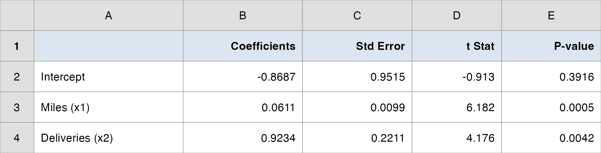
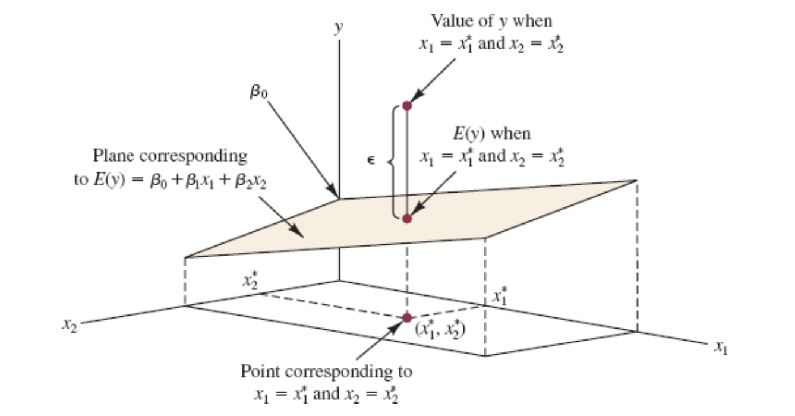
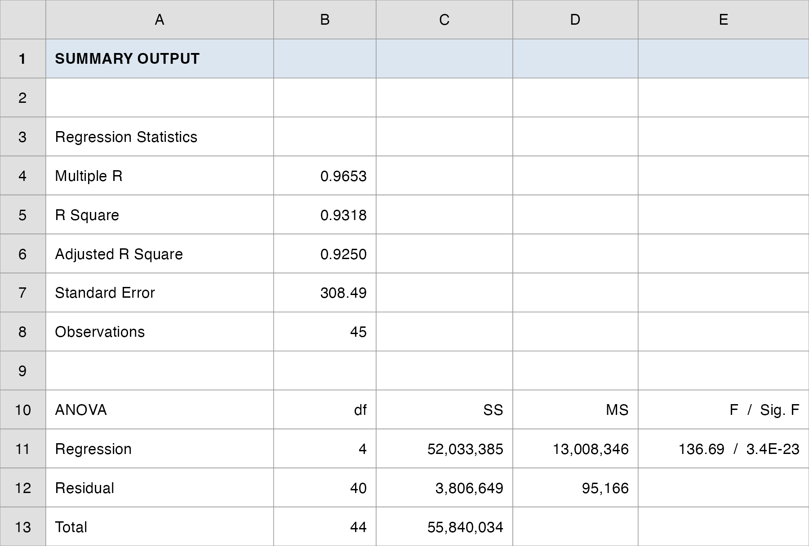
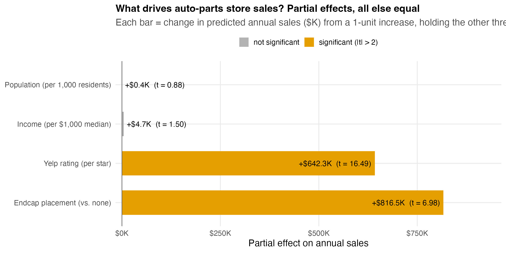
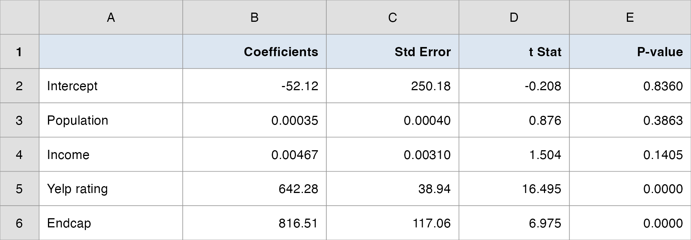
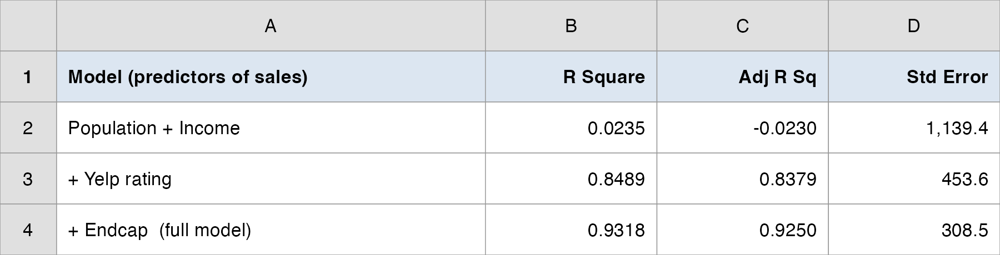
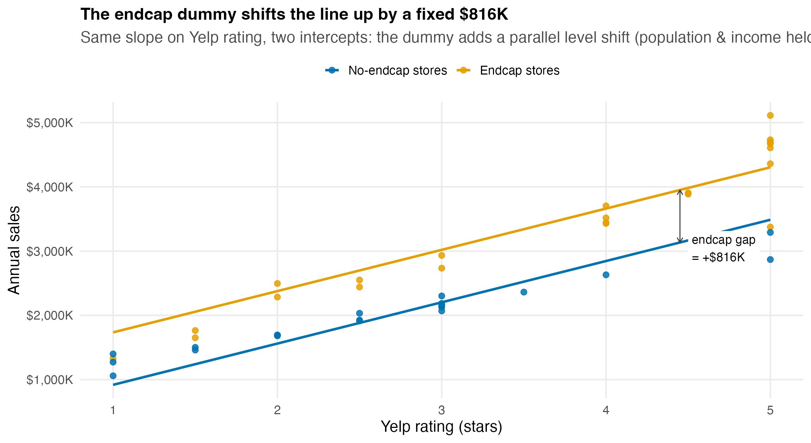
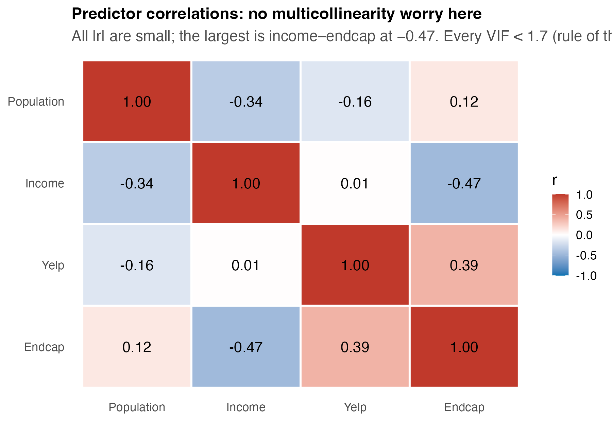

Multiple Regression
Our client is a regional auto-parts retail chain — 45 stores, deciding where to put its next dollar.
Last time we found a single strong predictor of a store’s annual sales: its Yelp rating. Each extra star was worth roughly +$758K a year. A clean simple-regression story.
But a Yelp rating is a symptom, not a lever you can pull directly. The CFO’s real question is sharper:
“We can invest in location (open stores in bigger, richer markets), in service (raise the customer experience), or in merchandising (pay for premium endcap shelf placement). Which actually drives sales — and where should the money go?”
| Column | What it measures | The lever it represents |
|---|---|---|
sales2012_k |
annual store sales ($ thousands) | the outcome we want to grow |
population_3mi |
residents within 3 miles | location — market size |
income_3mi |
median household income within 3 miles | location — market wealth |
yelp_rating |
average Yelp rating (1–5 stars) | service / customer experience |
endcap |
1 = premium endcap shelf placement, 0 = none | merchandising spend |
Data: data/autoparts.csv — 45 rows, one per store. endcap is already coded 0/1.
The trap we will spring today: the two drivers a manager expects to dominate — population and income — turn out not to matter once service and merchandising are in the model.
Two lectures, two halves of the decision:
Lecture 1 — Build & read the model. Fit sales on all four drivers; interpret each partial coefficient (“holding the others constant”); judge overall fit with \(R^2\) and adjusted \(R^2\). Anchor: Butler Trucking.
Lecture 2 — Test & decide. Which drivers are real (\(F\)-test vs. \(t\)-tests)? Put a dollar value on an endcap with a dummy variable; check the predictors don’t overlap (multicollinearity); make the investment call.
I demo each idea on a small textbook anchor → your team runs it on the auto-parts data → we debrief the recommendation together.
By the end, your team tells the CFO where to invest — with the regression to back it.
“Fit a model for store sales using all four drivers at once. For each driver, tell me its effect on sales holding the others fixed — and tell me how much of the sales story the model captures.”
Simple regression answered “does Yelp predict sales?” in isolation. But stores with high Yelp ratings might also sit in richer markets — so the simple slope can mix two effects together.
Multiple regression’s superpower: estimate the effect of each driver while statistically holding the others constant — the closest thing we have to a controlled comparison from observational data.
First we build the machine and learn to read its output. Testing and the dollar decision come in Lecture 2.
\[ y = \beta_0 + \beta_1 x_1 + \beta_2 x_2 + \cdots + \beta_p x_p + \epsilon \]
\[ E(y) = \beta_0 + \beta_1 x_1 + \beta_2 x_2 + \cdots + \beta_p x_p \]
Same error assumptions as before: \(E(\epsilon)=0\), constant variance \(\sigma^2\), independent errors, normally distributed.
\(\beta_j\) = the change in \(E(y)\) for a one-unit increase in \(x_j\) when all other variables are held constant. That phrase is the whole point of today.

\[ \hat{y} = b_0 + b_1 x_1 + b_2 x_2 + \cdots + b_p x_p \]
\[ \min \; SSE = \min \sum_{i=1}^{n} (y_i - \hat{y}_i)^2 \]
In simple regression, \(b_1\) was the effect of \(x\) on \(y\).
In multiple regression, \(b_j\) is a partial coefficient: the effect of \(x_j\) on \(y\) after the model has already accounted for every other predictor.
Read every coefficient with the same clause attached:
This is why a predictor can look important alone yet vanish in the full model — its apparent effect was really the work of a variable it travels with. (We will watch exactly this happen to population and income.)
Managers at Butler Trucking want better driver schedules. They believe a driver’s total daily travel time (\(y\), hours) depends on two things about the route:
Ten driving assignments were recorded. The proposed model:
\[ y = \beta_0 + \beta_1 x_1 + \beta_2 x_2 + \epsilon \qquad (n = 10,\; p = 2) \]
Data → Data Analysis → Regression
From the Coefficients column:
\[ \hat{y} = -0.869 + 0.0611\,x_1 + 0.923\,x_2 \]

\(b_1 = +0.0611\) (miles): each additional mile adds about 0.061 hour (~3.7 min) to travel time — holding the number of deliveries constant.
\(b_2 = +0.923\) (deliveries): each additional delivery adds about 0.92 hour — holding miles constant.
Predict assignment #1 (\(x_1=100\), \(x_2=4\)):
\[ \hat{y} = -0.869 + 0.0611(100) + 0.923(4) = 8.94 \text{ hours} \]
\[ \underbrace{\sum (y_i - \bar{y})^2}_{SST \;(\text{total})} \;=\; \underbrace{\sum (\hat{y}_i - \bar{y})^2}_{SSR \;(\text{explained})} \;+\; \underbrace{\sum (y_i - \hat{y}_i)^2}_{SSE \;(\text{unexplained})} \]
\[ R^2 = \frac{SSR}{SST} = 1 - \frac{SSE}{SST} \]
Here is the catch that makes \(R^2\) dangerous in multiple regression:
Why: a new variable gives least squares one more knob to fit noise, so \(SSE\) shrinks and \(R^2\) ticks up — whether or not the variable is real.
So a bigger \(R^2\) does not mean a better model. If we chased \(R^2\) alone, we would throw every variable we could find into the model.
We need a fit measure that charges a penalty for each predictor added. That is adjusted \(R^2\).
\[ R^2_a = 1 - \frac{SSE/(n - p - 1)}{SST/(n - 1)} = 1 - (1 - R^2)\,\frac{n - 1}{n - p - 1} \]
The penalty rises with \(p\) (more predictors) and eases with \(n\) (more data). Two consequences:
That makes \(R^2_a\) a real model-building criterion: compare candidate models, prefer the higher \(R^2_a\).
Butler: \(R^2 = 0.904\) but \(R^2_a = 0.876\) — the gap is the fee for using two predictors on only ten observations.
Data → Data Analysis → Regression
sales2012_kpopulation_3mi, income_3mi, yelp_rating, endcap) — selected togetherThe top block reports overall fit; we read it now and test it in Lecture 2.

From the Coefficients column of the output:
\[ \widehat{\text{sales}} = -52.1 + 0.00035\,\text{pop} + 0.0047\,\text{income} + 642.3\,\text{yelp} + 816.5\,\text{endcap} \]
Fit: \(R^2 = 0.932\), adjusted \(R^2 = 0.925\) — the four drivers together explain about 93% of the variation in store sales, and that holds up after the per-predictor penalty.
Standard error \(s = \$308.5\text{K}\): a rough “typical miss” of the model’s sales prediction.
Now the interpretation — and the surprise.

A manager’s intuition says population and income should dominate — more people, more money, more sales.
But the partial coefficients say otherwise:
Meanwhile service (Yelp) and merchandising (endcap) carry the model.
Why the intuition fails: in simple regression a market-size variable can look strong because it travels with the variables that really matter. Once those are in the model, “holding the others constant” strips the borrowed credit away. We will confirm this with formal tests in Lecture 2.
Decide: what does each driver contribute to predicted store sales, holding the others constant?
Data: data/autoparts.csv · Time: ~12 min
sales2012_k; X = the four columns population_3mi, income_3mi, yelp_rating, endcap (select together). Check Labels and Confidence Level 95%.Hand in (1 slide): the equation, \(R^2\) vs. adjusted \(R^2\), and your dollar reading of the two biggest drivers.
One sentence: four drivers explain 93% of store-sales variation, and the effects that matter are service (Yelp, +$642K/star) and merchandising (endcap, +$816K) — not the market-size variables a manager would bet on.
One number: adjusted \(R^2 = 0.925\) — high fit that survives the penalty for using four predictors, so the model isn’t just padded with noise.
One caveat: “holding the others constant” is doing heavy lifting. A coefficient near zero (population, income) doesn’t prove the variable is irrelevant in the world — only that it adds little once the others are in. Next lecture we make that rigorous with the \(F\)- and \(t\)-tests.
Your client (homework, part 1): fit a multiple regression for your team’s case with two or more predictors. Report the estimated equation, \(R^2\), and adjusted \(R^2\); interpret each coefficient with the “holding the others constant” clause.
Next lecture: which of these drivers are statistically real? We separate the overall \(F\)-test from the individual \(t\)-tests, put a defensible dollar value on an endcap with a dummy variable, and make the investment call.
“The model fits well — but is each driver real, or could its coefficient be noise? Put a dollar figure on an endcap we can defend in a budget meeting. Then tell me: invest in location, service, or merchandising?”
A high \(R^2\) tells us the model predicts well in aggregate. It does not tell us which individual coefficients we can trust.
Today we add the inference layer: an overall test (is the model useful at all?), individual tests (which predictors carry their weight?), the dummy variable that turns “has an endcap” into a dollar amount, and a multicollinearity check so we don’t get fooled by overlapping predictors.
In simple regression, the \(F\)-test and the \(t\)-test gave the same answer — there was only one predictor to judge.
In multiple regression they split into two distinct jobs:
You always read them in that order: \(F\) first (is anything here?), then \(t\)’s (which things?).
\[ H_0: \beta_1 = \beta_2 = \cdots = \beta_p = 0 \qquad H_a: \text{at least one } \beta_j \neq 0 \]
\[ F = \frac{MSR}{MSE} = \frac{SSR/p}{SSE/(n - p - 1)} \;\sim\; F_{p,\; n-p-1} \text{ under } H_0 \]
From the ANOVA block (\(n = 45\), \(p = 4\)):
| Source | df | SS | MS | \(F\) |
|---|---|---|---|---|
| Regression | 4 | 52,033,385 | 13,008,346 | 136.7 |
| Residual | 40 | 3,806,649 | 95,166 | |
| Total | 44 | 55,840,034 |
\[ F = \frac{MSR}{MSE} = \frac{13{,}008{,}346}{95{,}166} = 136.7, \qquad \text{Significance } F \approx 3.4\times10^{-23} \]
\[ H_0: \beta_j = 0 \qquad H_a: \beta_j \neq 0 \qquad t = \frac{b_j}{s_{b_j}}, \quad df = n - p - 1 \]
\(s_{b_j}\) is the standard error of the coefficient (Excel’s “Standard Error” column). Reject \(H_0\) when the p-value \(\le \alpha\), i.e. roughly when \(|t| \gtrsim 2\).
Critical subtlety: each \(t\)-test is conditional on the other predictors being in the model. A predictor can be significant alone and insignificant here — because a teammate is already explaining its share.
For each predictor, the output gives Coefficient, Std Error, t Stat, P-value, and a 95% CI.
Scan the t Stat column top to bottom and sort the drivers into “real” vs. “can’t tell.”

| Driver | Coefficient | \(t\) | p-value | Significant? |
|---|---|---|---|---|
| Population | +0.00035 | 0.88 | 0.39 | No |
| Income | +0.0047 | 1.50 | 0.14 | No |
| Yelp rating | +642.3 | 16.5 | < 0.0001 | Yes |
| Endcap | +816.5 | 6.98 | < 0.0001 | Yes |
The model is highly significant overall (\(F = 136.7\)) — yet two of its four predictors are individually insignificant.
The lesson: a significant \(F\) does not mean every variable matters. Here all the explanatory power comes from service (Yelp) and merchandising (endcap); the location variables are statistical passengers.
Significance ≠ importance, and importance ≠ significance. Judge each on its own evidence.
Build models step by step and watch adjusted \(R^2\):
The location variables a manager would buy first are the ones that move the model least.

endcap isn’t a number you can have more or less of — it is a category: a store either has premium endcap placement or it doesn’t.
We encode it as a dummy (indicator) variable: \(1\) = has an endcap, \(0\) = none. The \(0\) category is the reference (baseline) level.
Excel treats the 0/1 column like any other predictor — no special tool. Its coefficient has a special meaning:
In other words, the dummy coefficient is the dollar value of an endcap — exactly what the CFO asked for.
\[ \text{No endcap } (x=0): \quad \widehat{\text{sales}} = (b_0 + \cdots) + 642.3\,\text{yelp} \]
\[ \text{Endcap } (x=1): \quad \widehat{\text{sales}} = (b_0 + 816.5 + \cdots) + 642.3\,\text{yelp} \]
Same slope on every other variable — only the intercept shifts up by $816.5K.
A dummy gives the two groups parallel lines: identical response to Yelp, location, income — but a fixed level gap between them.

Scenario: the chain plans a new store with population_3mi = 120,000, income_3mi = 55,000, yelp_rating = 4.0. Should it pay for endcap placement?
Plug into the fitted equation, once with endcap = 0 and once with endcap = 1:
| Configuration | Predicted annual sales |
|---|---|
| Without endcap | $2,816K |
| With endcap | $3,632K |
| Lift from the endcap | +$816K / year |
endcap had two levels → one dummy. The rule generalizes:
Example — three store formats (Standard, Express, Flagship): use two dummies (Express 0/1, Flagship 0/1); “Standard” is the reference. Each dummy coefficient is that format’s sales gap versus Standard.
Do not encode categories as a single 1/2/3 number — that would falsely force the levels to be evenly spaced and ordered. Always use separate 0/1 columns.
Multicollinearity = two or more predictors are strongly correlated with each other.
When predictors overlap, the model struggles to credit the effect to one versus another. Symptoms:
It rarely hurts prediction, but it muddies interpretation — and interpretation is exactly what the CFO is buying.
Quick look: the predictor correlation matrix (Data Analysis → Correlation). Flag any pair with \(|r| > 0.7\).
Formal measure: the Variance Inflation Factor,
\[ VIF_j = \frac{1}{1 - R_j^2} \]
where \(R_j^2\) is from regressing \(x_j\) on all the other predictors. Rule of thumb: investigate when VIF > 5.

| Predictor | VIF |
|---|---|
| Population | 1.17 |
| Income | 1.49 |
| Yelp rating | 1.29 |
| Endcap | 1.62 |
So population and income are insignificant for an honest reason — they genuinely add little once service and merchandising are in the model. This is not a multicollinearity artifact; the verdict is trustworthy.
Contrast: had population and income been highly correlated, we’d have to be cautious — their small \(t\)’s could have been an overlap symptom rather than true irrelevance.
Decide: which drivers are real, what is an endcap worth, and where should the CFO invest?
Data: data/autoparts.csv · Time: ~15 min
pop = 120,000, income = 55,000, yelp = 4.0) with endcap = 0 and with endcap = 1; the difference is the endcap’s dollar value.Hand in (1 slide): your significant-vs-not verdict, the endcap’s dollar value, and the CFO recommendation.
One sentence: the overall model is decisive (\(F = 136.7\)), but only service (Yelp) and merchandising (endcap) survive their individual \(t\)-tests — so the budget goes there, not into bigger-market real estate.
One number: $816K — an endcap’s value, straight off the dummy coefficient; defensible against any lease under that figure.
One caveat: every coefficient is read “holding the other three constant” and the model is descriptive — pilot the endcap, then re-estimate before betting the chain on it.
| Driver | Partial effect | \(t\) | Verdict | Investment read |
|---|---|---|---|---|
| Population (3 mi) | +$0.35K / 1,000 residents | 0.88 | not significant | bigger market ≠ more sales here |
| Income (3 mi) | +$4.7K / $1,000 income | 1.50 | not significant | richer market ≠ more sales here |
| Yelp rating | +$642K / star | 16.5 | significant | invest in service / experience |
| Endcap | +$816K | 6.98 | significant | buy the endcap placement |
Model: \(R^2 = 0.932\), adjusted \(R^2 = 0.925\), overall \(F = 136.7\) (p \(< 10^{-22}\)), \(s = \$308.5\)K, all VIF \(< 1.7\).
The \(F\)-test and the \(t\)-tests answer different questions, and you need both:
Significance is conditional. Every coefficient and every \(t\) here means “…holding the other three constant.” Change the set of predictors and the story can change.
Significance ≠ importance. With huge samples trivial effects turn “significant”; with small samples real effects can hide. Always pair the test with the dollar size of the effect — that is the number a manager decides on.
One sentence: for this 45-store chain, service and merchandising — not location demographics — drive sales, so invest in Yelp rating (+$642K/star) and endcap placement (+$816K), each statistically decisive.
One number to remember: $816K — the value of an endcap, read straight off a dummy variable’s coefficient, holding everything else constant.
One caveat: the model describes 45 existing stores; it does not prove that buying an endcap will cause +$816K at a brand-new store. Correlation control is the best we can do with observational data — pilot it, then re-estimate.
Practice with the real data: data/autoparts.csv + Excel Regression → reproduce \(R^2 = 0.932\), \(F = 136.7\), the four coefficients, and the prediction. Worked solutions: data/autoparts_regression.xlsx.
Some key takeaways from this topic:
Your client (homework, part 2): for your team’s case, run the overall \(F\)-test and the individual \(t\)-tests; if your case has a natural category, add a dummy and interpret its coefficient as a group difference. Check VIF for any predictors you suspect overlap. Close with a one-paragraph recommendation: which lever should the client pull, and what is it worth?
Where we’ve been: from comparing two groups (inference) to predicting with one driver (simple regression) to isolating many drivers at once (today) — the analyst’s core toolkit for turning data into a defensible business decision.
Business Analytics